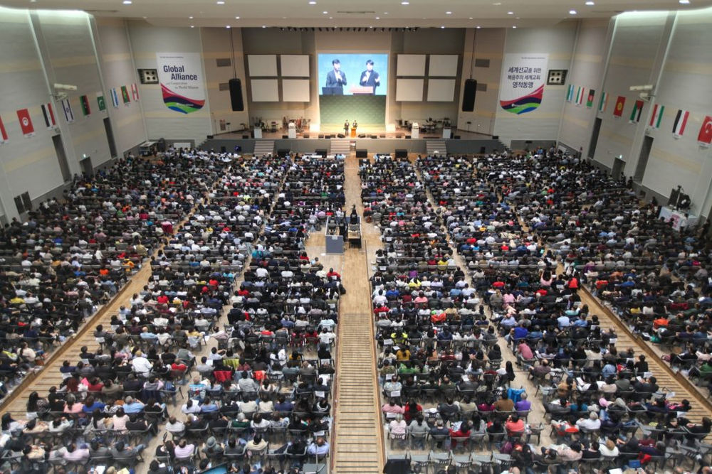
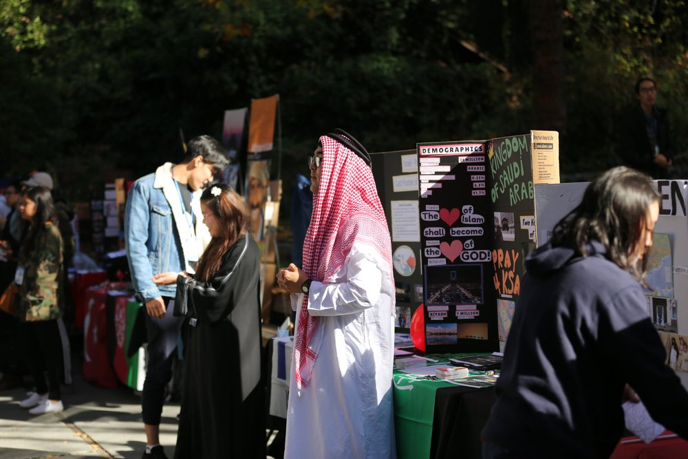

For Churches
How We Work With Your Local Church
Our church relations and mission policy explain, point by point, how InterCP International serves with your local church.

The Local Church Is the Subject of World Mission
Mission groups exist to mobilize, educate, and support the overseas mission of the local church.
Read more

Church, Mission Group, and Missionary
Read more

Every InterCP Missionary Is Sent by a Local Church
Read more

Guiding Trainees to Serve Their Own Local Church With Maturity
Read more

Why We Guide Members to Tithe to Their Local Church
Read more

From Trainee to Missionary: Consulting Your Senior Pastor Before Being Sent
Read more

Designated Giving Only: Name the Purpose or the Missionary
Read more

Why a Sending Church Gives About a Third of Mission Support
Read more

Mission Training Held Within the Local Church Where Possible
Read more

Making Mission Camp a Part of Your Church’s Summer Retreat or Event
Read more

Invite Our Regional Staff to Present at Your Church
Read more

Global Alliance: A Spiritual Alliance of World Evangelical Churches
Read more
Start a World Mission Gathering
Read more

Pastors and Leaderships Vision Camp: Strengthening the Spiritual Leadership of Pastors
Read more

Pastor Field Operation: Vision Casting and Diverse Ministries for Pastors
Read more

Church Mobilization Ministry: Strengthening Ethnic Churches
Read more

Early Church Expedition and Mission
Read more

Now Is the Time to Transition to a Mission-Oriented Church
Read more